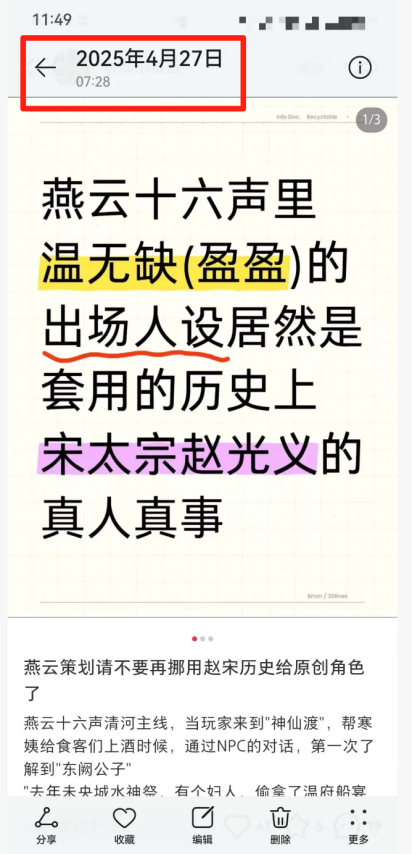
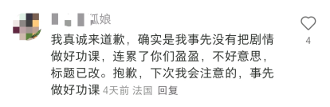
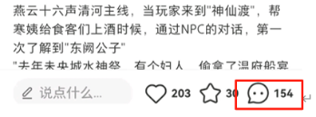
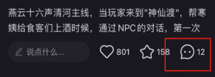
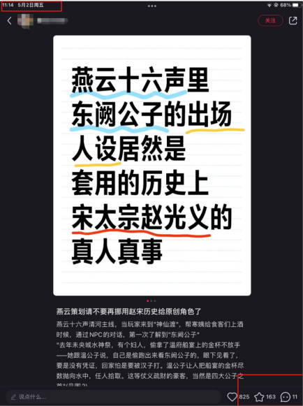

混淆温无痕、温无缺二人及东阙公子指代
原帖引起争议的最主要原因：
原帖主在对游戏剧情没有足够了解、甚至大概率没有看过游戏文案的前提下，错误地将温无痕、温无缺二人混淆，并且在大标题上带温无缺大名、甚至特地打括号标注温无缺游戏中另外一个名字盈盈进行强调。
最初争议标题时间：2025年4月27日07：28

引起争议后事情发展轨迹：
（1）争议开始
由于该帖大标题带了燕云npc温无缺大名，并且有明显错误的情况下，引起温无缺粉丝【后称盈推】进入帖子留言辟谣。
（2）删除评论
贴主删除拉黑了部分盈推辟谣。
（3）新帖辟谣
由于争议太多且被删评拉黑，部分盈推发新帖辟谣，表示贴主混淆温无缺和温无痕。
（4）“道歉”但拒绝更改
实锤之下，该贴主到盈推辟谣帖下“真诚道歉”，但拒绝在原帖道歉；修改了大标题温无缺（盈盈）大名，但仍然带了东阙公子的称呼。

原贴主在盈推帖子“道歉”，但拒不更改标题/在原贴澄清
（5）删除所有评论
贴主删除了原帖所有评论，盈推澄清评论彻底被删除干净。


原帖的评论被删得只剩十几条
（6）现状
时至撰文时间2025年5月2日，原帖仍然带着东阙公子称呼，并未修改标题。
